| Thắng cảnh Tràng An
Quần thể danh thắng Tràng An nằm ở khu vực ranh giới giữa huyện Hoa Lư với các huyện Gia Viễn, Nho
Quan, thành phố Tam Điệp và thành phố Ninh Bình.
Quần thể danh thắng Tràng An là một vùng du lịch tổng hợp gồm các di sản văn hóa và thiên nhiên thế
giới do UNESCO công nhận ở Ninh Bình, Việt Nam. Trước đó, nhiều di tích danh thắng nơi đây đã được Chính
phủ Việt Nam xếp hạng di tích quốc gia đặc biệt quan trọng như Khu du lịch sinh thái Tràng An, khu du
lịch Tam Cốc - Bích Động, chùa Bái Đính, cố đô Hoa Lư...
Tràng An là một trong những nơi có cảnh quan tháp karst đẹp và quyến rũ nhất trên thế giới. Phủ lên
cảnh quan là thảm rừng và các tháp dạng nón hùng vĩ cao 200m, với các hố trũng hẹp khép kín, bao quanh
bởi các sống núi nối liền nhau, các đầm lầy thông nhau qua hệ thống suối xuyên ngầm có chiều dài lên tới
1 km. Vẻ hài hòa của đá, sông nước, rừng cây và bầu trời ở Tràng An tạo nên một thế giới tự nhiên sống
động đầy quyến rũ. Đó là nơi rất đặc biệt, nơi văn hóa tiếp xúc với kỳ quan, bí ẩn và vẻ hùng vĩ của thế
giới tự nhiên, và văn hóa cũng bị bi eến đổi bởi chính những điều đó.
Tràng An có thiên nhiên tươi đẹp với những ngọn núi, hang động huyền bí, sông nước thanh tĩnh, những
di
tích linh thiêng và những hệ động, thực vật phong phú, quý hiếm.
Dựa trên 3 tiêu chí: văn hóa, vẻ đẹp thẩm mỹ và địa chất - địa mạo, Ủy ban Di sản Thế giới thuộc Tổ
chức Giáo dục, Khoa học và Văn hóa của Liên hợp quốc UNESCO năm 2014 đã công nhận Quần thể danh thắng
Tràng An là di sản văn hóa và thiên nhiên thế giới.
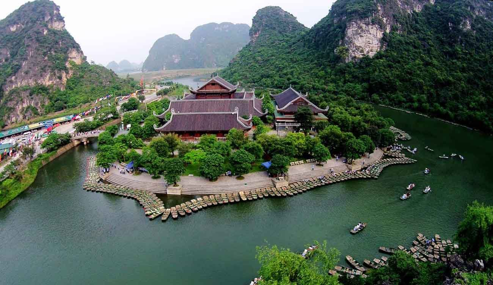

| Tam Cốc - Bích Động
Tam Cốc – Bích Động còn được biết đến với những cái tên nổi tiếng như "vịnh Hạ Long trên cạn" hay
"Nam thiên đệ nhị động" là một khu du lịch trọng điểm quốc gia Việt Nam.
Là một phần trong Quần thể danh thắng Tràng An, Tam Cốc Bích Động Ninh Bình thuộc địa phận huyện
Hoa
Lư, tỉnh Ninh Bình, cách Hà Nội 100km về phía Nam. Sở hữu diện tích rộng rãi 350,3ha, danh thắng là tổ
hợp các hệ thống hang động núi đá vôi cùng phong cảnh làng quê yên bình.
Bên cạnh đó, quần thể du lịch này còn sở hữu một ngôi chùa Bích Động đậm đà lối kiến trúc truyền
thống và những di tích lịch sử liên quan đến hành cung Vũ Lâm của triều đại nhà Trần ngày trước.
Quần thể danh thắng Tràng An - Tam Cốc được Thủ tướng chính phủ Việt Nam xếp hạng là di tích quốc
gia đặc biệt và đã được tổ chức UNESCO xếp hạng di sản thế giới.
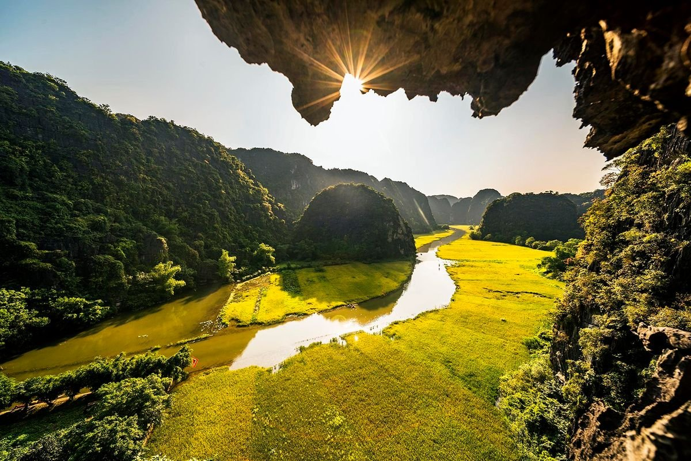
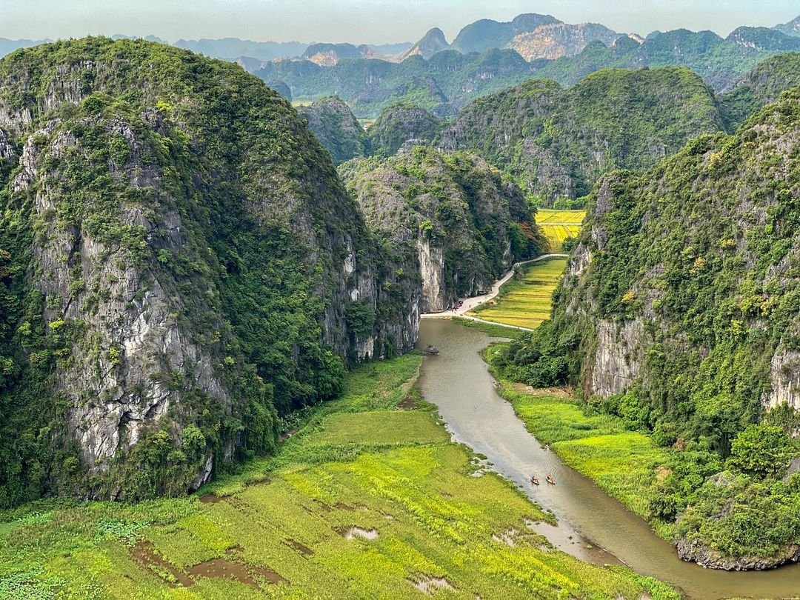
| Quần thể di tích Cố đô Hoa Lư
Quần thể di tích Cố đô Hoa Lư, nằm xã Trường Yên, huyện Hoa Lư, tỉnh Ninh Bình, là hệ thống các di
tích về kinh đô Hoa Lư của nước Đại Cồ Việt trong lịch sử Việt Nam. Khu di tích hiện thuộc địa bàn
tỉnh Ninh Bình, là một trong những di tích quốc gia đặc biệt quan trọng của Việt Nam và cũng là một
trong ba vùng lõi của quần thể di sản thế giới Tràng An đã được UNESCO công nhận.
Hệ thống di tích ở Hoa Lư liên quan đến sự nghiệp của các nhân vật lịch sử thuộc ba triều đại
nhà
Đinh, nhà Tiền Lê và khởi đầu nhà Lý. Hoa Lư là kinh đô đầu tiên của nhà nước phong kiến Trung ương
tập quyền ở Việt Nam với các dấu ấn lịch sử: thống nhất giang sơn, đánh Tống - dẹp Chiêm và phát
tích quá trình định đô Hà Nội. Năm 1010 vua Lý Thái Tổ dời kinh đô từ Hoa Lư (Ninh Bình) về Thăng
Long (Hà Nội), Hoa Lư trở thành Cố đô.
Quần thể di tích Cố đô Hoa Lư là tập hợp của hệ thống kiến trúc đền thờ, kiến trúc đình làng,
kiến
trúc chùa cổ, hệ thống lăng, bia, phủ, trấn và các bảo vật quốc gia.
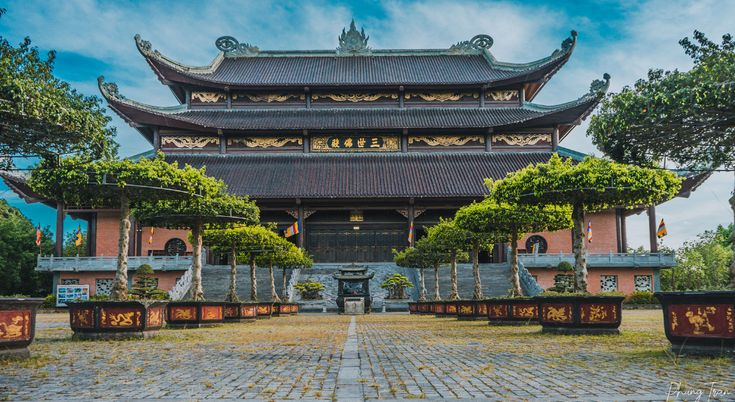
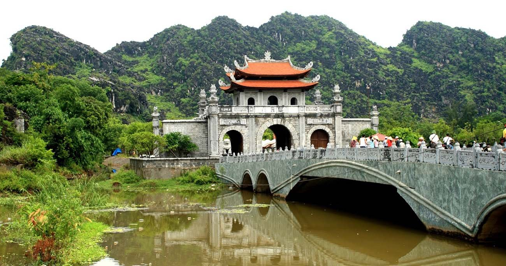
| Hang múa
Thuộc địa phận thôn Khê Hạ, xã Ninh Xuân. Đây là khu du lịch nhân tạo với các dịch vụ như leo
núi, nghỉ ngơi cuối tuần và hội nghị.
Điểm nhấn của địa điểm du lịch này ngoài phong cảnh tuyệt đẹp chính là con đường dẫn lên đỉnh
núi Múa được xây dựng mô phỏng theo kiến trúc Vạn Lý Trường Thành với gần 500 bậc thang đá. Từ
đỉnh núi Múa, du khách có thể chiêm ngưỡng toàn bộ cảnh đẹp của khu Tam Cốc, danh thắng nổi tiếng
ở Ninh Bình. Theo truyền thuyết, vua Trần khi về vùng Hoa Lư lập Am Thái Vi thường tới đây để nghe
các mỹ nữ, cung tần múa hát. Vì vậy, nơi đây được đặt tên là Hang Múa.
Nơi đây được mệnh danh là "nàng thơ của Tam Cốc" hay "Vạn lý trường thành của Việt Nam" với
khung cảnh hùng vĩ của những đỉnh núi, một chút thơ mộng của những cánh đồng lúa chín vàng hay
những ngọn tháp đầy ma mị trên đỉnh núi.
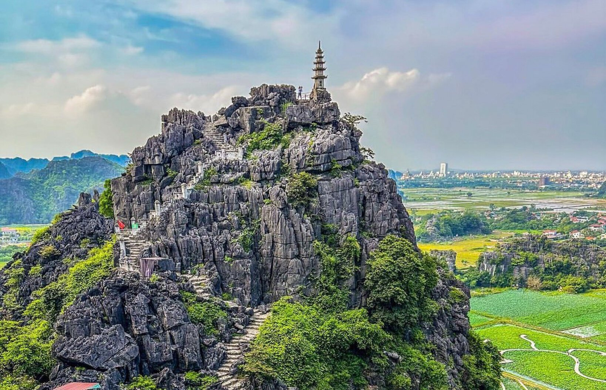
| Chùa Bái Đính
Chùa Bái Đính là một công trình kiến trúc phật giáo nổi tiếng nằm ở xã Gia Sinh, Gia Viễn,
Ninh Bình
Hơn 1000 năm về trước, ba triều đại phong kiến nhà Đinh, nhà Tiền Lê và nhà Lý đều rất quan
tâm và coi đạo Phật là Quốc giáo nên cho xây rất nhiều chùa cổ, trong đó có chùa Bái Đính nằm
trên dãy núi Tràng An. Chùa có lịch sử hình thành từ thời Đinh nhưng vẫn có nhiều chi tiết kiến
trúc và cổ vật mang dấu ấn đậm nét của thời Lý.
Chùa nằm trên vùng đất hội tụ đầy đủ các yếu tố địa linh nhân kiệt theo quan niệm dân gian
Việt Nam. Đây là đất sinh Vua, sinh Thánh, sinh Thần. Núi chùa cổ Bái Đính từng là nơi Đinh Tiên
Hoàng Đế lập đàn tế trời cầu mưa thuận gió hòa, vua Quang Trung chọn để làm lễ tế cờ động viên
quân sĩ trước khi ra Thăng Long đại phá quân Thanh. Thế nên.
Đến năm 1997 chùa Bái Đính được công nhận là di tích lịch sử - văn hóa - cách mạng cấp quốc
gia. Với những điều đặc biệt và linh thiêng như thế nên hằng năm chùa đã đón lượng lớn du khách
và Phật tử đến thăm.
Cho đến nay, quần thể chùa Bái Đính gồm có một khu chùa cổ và một khu chùa mới xây dựng từ
năm
2003. Chùa nằm sừng sững trên sườn núi, thấp thoáng mặt hồ xanh ngắt và những ngọn núi đá. Đặc
biệt, chùa nằm ngay ở cửa ngõ phía tây vào cố đô Hoa Lư.
Với độ tuổi hơn 1000 năm, kiến trúc chùa mang đậm những nét đẹp cổ kín đặc trưng từ thời xa
xưa. Mặc dù có sự xuất hiện của khu chùa mới, được thiết kế và xây dựng hoành tráng, đồ sộ nhưng
vẫn hài hòa với bản sắc truyền thống.
Không chỉ là địa điểm sinh hoạt tôn giáo, chùa Bái Đính đã dần trở thành điểm du lịch sinh
thái, tâm linh nổi tiếng. Chùa đã nhận được đến 8 kỷ lục Việt Nam và Châu Á như:
• Chuông đồng lớn nhất Việt Nam;
• Tượng Phật Thích Ca cao nhất nặng nhất châu Á;
• Bộ tượng Tam thế bằng đồng dát vàng lớn nhất Việt Nam;
• Tượng Phật Di Lặc bằng đồng lớn nhất Đông Nam Á;
• Chùa có hành lang La Hán lớn nhất Việt Nam;
• Chùa có nhiều cây bồ đề nhất Việt Nam,...

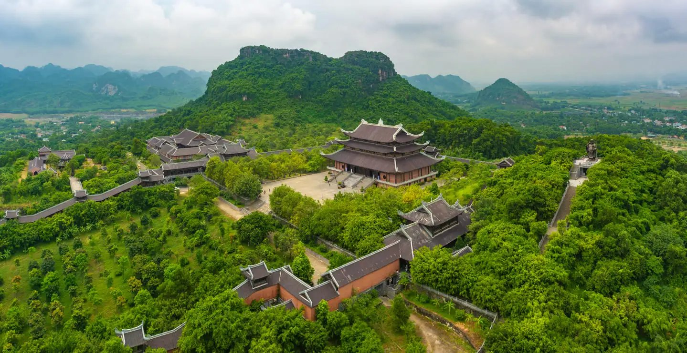
| Động Am Tiên – “Tuyệt
tình cốc ở Ninh Bình”
Động An Tiêm là một danh lam thuộc quần thể di tích cố đô Hoa Lư tại vùng đất xá Trường yên,
huyện Hoa Lư, Ninh Bình.
Tuyệt tịnh cốc Hoa Lư Ninh Bình khiến du khách mê mẩn là vẻ đẹp của hồ nước hồ nước trong
xanh được bao bọc xung quanh bởi núi đá – nét đặc trưng của vẻ đẹp tại Ninh Bình. Quanh bờ hồ
có một con đường được lát đá nhẵn mịn, bạn phải mất 15 phút đi bộ nếu muốn đi hết con đường
quanh hồ này. Làn nước trong xanh có thể nhìn sâu xuống tận đáy hồ. Các loại tảo và sinh vật
dưới hồ cũng phát triển mạnh mẽ, tô điểm thêm vẻ thơ mộng và huyền bí cho nơi đây. Bạn có thể
thư thả đi bộ quanh hồ để cảm nhận chốn tiên cảnh ngay tại trần gian.
Để đến được động Am Tiên bạn phải leo 205 bậc thang, dọc bậc thang này được các tán cây
che
mát với những tia nắng len lỏi dọi xuống con đường bạn đi. Đi hết những bậc thang này, bạn sẽ
nhận ra cửa động Am Tiên với một chiếc chuông lớn. Tương truyền đây là nơi mà thái hậu Dương
Vân Nga tu hành.
Đứng ở chùa trên động Am Tiêm, bạn có thể nhìn được bao quát không gian hùng vĩ của những
ngọn núi cao sừng sừng, hồ nước trong xanh như tấm thảm lụa nhẹ nhàng trải dài ở dưới tầm mắt.
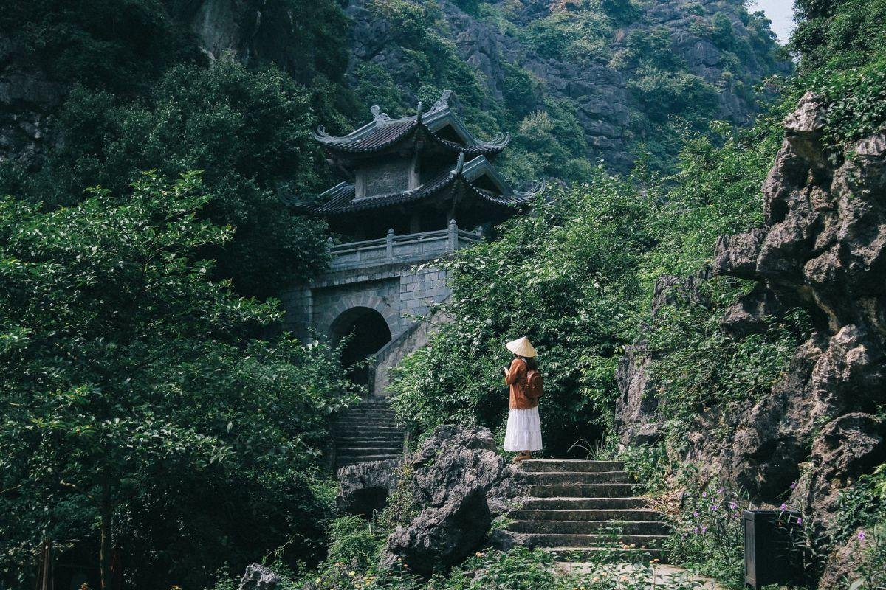
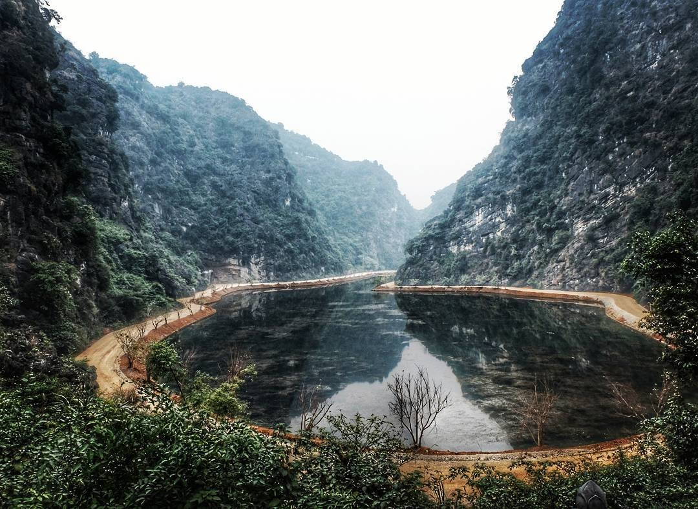
| Vườn chim Thung Nham
Khu du lịch vườn chim Thung Nham (hay còn gọi là Thung Chim) thuộc xã Ninh Hải, huyện Hoa
Lư, tỉnh Ninh Bình. Nơi đây nằm trong lõi quần thể danh thắng Tràng An nổi tiếng và rất gần
với Tam Cốc Bích Động.
Là một khu du lịch sinh thái trải rộng trên 334 ha, vườn chim Thung Nham có rất nhiều
danh
thắng đẹp nên thơ mà bạn không thể bỏ qua. Nếu không có nhiều thời gian, bạn nên tới ít nhất
3 địa điểm này:
Hang Bụt: Hang Bụt là hang đá tự nhiên dài 500m thuộc khu du lịch vườn chim Thung Nham.
Trong hang có thạch đá hình ông Bụt đang ngồi bên dòng sông ngầm rất đẹp. Hang tối và không
có hệ thống đèn điện chiếu sáng, bạn sẽ cầm theo đèn pin để tham quan.
Động Vái Giời: Động Vái Giời là động nằm trên núi cao, rộng khoảng 5000 m2 với 3 tầng
động
chứa rất nhiều măng nhũ đá chia thành “Trần gian, Địa ngục và Thiên đường”. Có tích rằng đây
là nơi lập đàn tế Trời của người xưa, cầu cho mưa thuận gió hòa, mùa màng bội thu. Các du
khách tới vườn chim Thung Nham hầu như đều đi thăm động để cầu chúc chuyến tham quan bình an
tốt đẹp.
Khu vườn chim: Đây chắc chắn là điểm đến quan trọng nhất của khu du lịch vườn chim Thung
Nham Ninh Bình. Khu vườn chim là không gian sinh sống của rất nhiều loài chim như cò, vạc,
le le, chích chòe,… đặc biệt là hai loài quý hiếm trong sách đỏ là hằng hạc và phượng hoàng.
Dãy núi đá vôi sừng sững in bóng trên làn nước xanh cùng những đàn chim chuyền cành tạo nên
khung cảnh bình yên thơ mộng hiếm nơi nào có được.
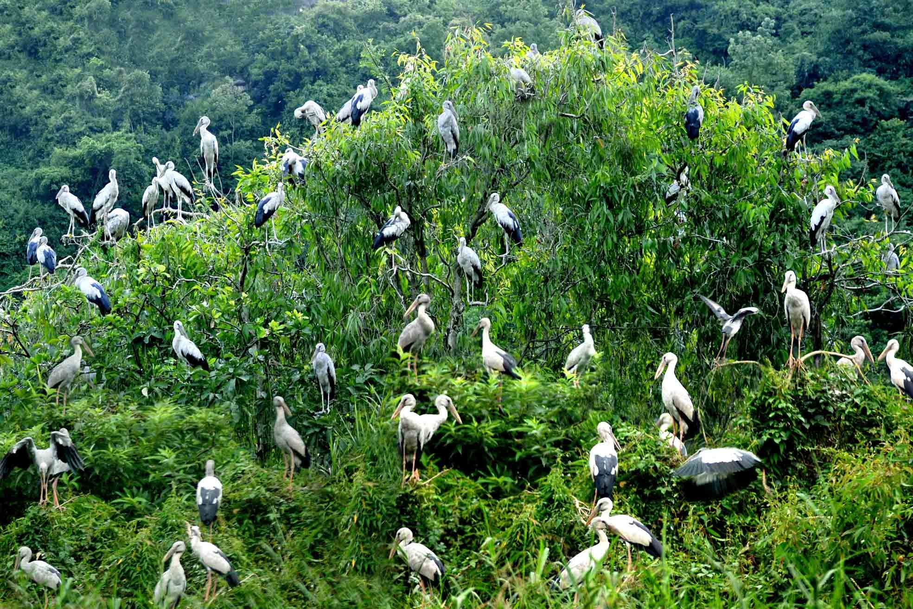
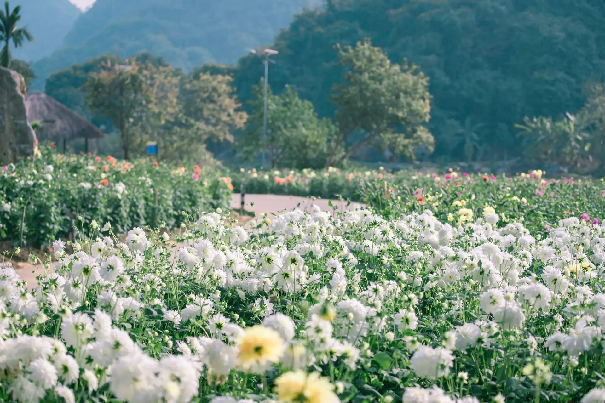
| Vườn chim Thung Nham
Khu du lịch vườn chim Thung Nham (hay còn gọi là Thung Chim) thuộc xã Ninh Hải, huyện Hoa
Lư, tỉnh Ninh Bình. Nơi đây nằm trong lõi quần thể danh thắng Tràng An nổi tiếng và rất
gần
với Tam Cốc Bích Động.
Là một khu du lịch sinh thái trải rộng trên 334 ha, vườn chim Thung Nham có rất nhiều
danh
thắng đẹp nên thơ mà bạn không thể bỏ qua. Nếu không có nhiều thời gian, bạn nên tới ít
nhất
3 địa điểm này:
Hang Bụt: Hang Bụt là hang đá tự nhiên dài 500m thuộc khu du lịch vườn chim Thung
Nham.
Trong hang có thạch đá hình ông Bụt đang ngồi bên dòng sông ngầm rất đẹp. Hang tối và
không
có hệ thống đèn điện chiếu sáng, bạn sẽ cầm theo đèn pin để tham quan.
Động Vái Giời: Động Vái Giời là động nằm trên núi cao, rộng khoảng 5000 m2 với 3 tầng
động
chứa rất nhiều măng nhũ đá chia thành “Trần gian, Địa ngục và Thiên đường”. Có tích rằng
đây
là nơi lập đàn tế Trời của người xưa, cầu cho mưa thuận gió hòa, mùa màng bội thu. Các du
khách tới vườn chim Thung Nham hầu như đều đi thăm động để cầu chúc chuyến tham quan bình
an
tốt đẹp.
Khu vườn chim: Đây chắc chắn là điểm đến quan trọng nhất của khu du lịch vườn chim
Thung
Nham Ninh Bình. Khu vườn chim là không gian sinh sống của rất nhiều loài chim như cò, vạc,
le le, chích chòe,… đặc biệt là hai loài quý hiếm trong sách đỏ là hằng hạc và phượng
hoàng.
Dãy núi đá vôi sừng sững in bóng trên làn nước xanh cùng những đàn chim chuyền cành tạo
nên
khung cảnh bình yên thơ mộng hiếm nơi nào có được.
| Đầm Vân Long
Đầm Vân Long thuộc địa phận xã Gia Vân, huyện Gia Viễn, tỉnh Ninh Bình.
Hệ sinh thái đất ngập nước và rừng trên núi đá vôi là hai hệ sinh thái chủ yếu tại
khu
du lịch Vân Long. Ngoài ra có thể kể đến các hệ sinh thái khác như đồng ruộng, bãi cỏ,
nương rẫy, bản làng. Với diện tích gần 3.500ha, đầm Vân Long là nơi tập cư trú của động,
thực vật, thuỷ sinh lưu trú, sinh trưởng. Trong đó có cả Voọc mông trắng – loài linh
trưởng đặc Hữu của Việt Nam cần được bảo tồn.
Nơi đây là khu bảo tồn thiên nhiên đất ngập nước lớn nhất vùng đồng bằng châu thổ
Bắc
Bộ. Khu sinh thái Vân Long có nhiều cảnh quan, hang động, di tích văn hoá. Vẻ đẹp Vân
Long càng trở nên thi vị khi xuất hiện hình ảnh con người. Đâu đó bóng dáng ai ngồi
thuyền nan mộc mạc thong dong trên mặt nước yên bình khiến khu sinh thái này thơ mộng
muôn phần.
Nước tại đây có một màu trong vắt. Ta có thể nhìn thấy những sinh vật bên dưới. Nhìn
xuống mặt hồ in bóng mây trời, núi đồi xanh biếc tuyệt đẹp. Thấp thoáng ẩn hiện sau đám
cỏ những đàn cò trắng, đàn cò lửa đang kiếm ăn. Không gian xanh bình dị thơ mộng khiến
ta cảm thấy bình yên và thư thái.
Đầm Vân Long Ninh Bình hiện ra như một bức tranh sơn thủy hữu tình với cảnh
vật hoang sơ, nơi đây từng được hãng phim nổi tiếng Legendary Entertainment chọn
làm một trong những bối cảnh cho bộ phim Kong – Skull Island nổi tiếng. Qua những
thước phim sắc xảo cho thấy vẻ đẹp của hồ, từ đó Vân Long nhanh chóng trở
thành điểm đến níu chân du khách cả trong và ngoài nước.
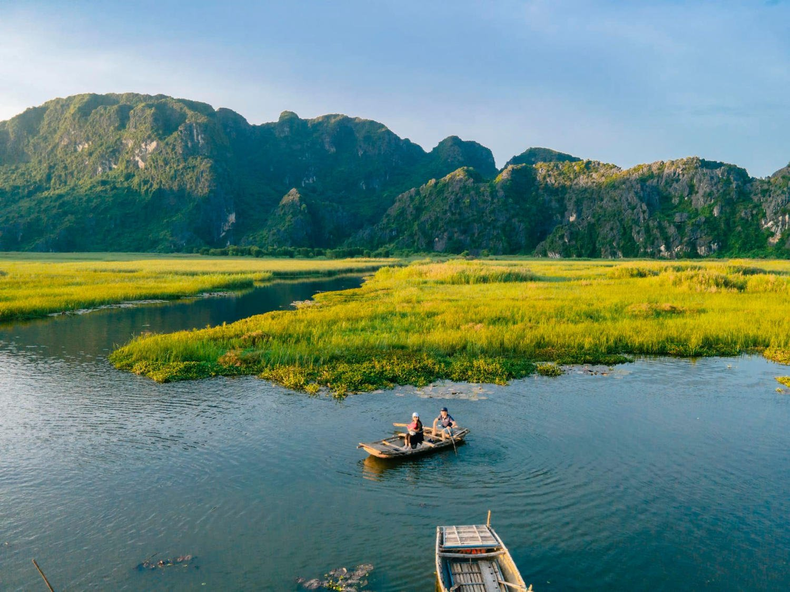
| Vườn quốc gia Cúc
Phương
Vườn quốc gia Cúc Phương (rừng cúc phương) là khu bảo tồn thiên nhiên, khu rừng đặc
dụng nằm trên đia phận của 3 tỉnh Ninh Bình, Hòa Bình và Thanh Hóa.
Rừng Cúc Phương mang đặc trưng của rừng nhiệt đới với hệ động thực vật phong phú
trong đó có nhiều loài động thực vật quý hiếm có nguy cơ tuyệt chủng được phát hiện và
bảo tồn tại đây.
Cùng với sự đa dạng và phong phú về khu hệ động, thực vật, Cúc Phương còn là một bảo
tàng thiên nhiên tuyệt vời lưu giữ nhiều dấu tích của sự sống từ thời tiền sử cho đến
ngày nay. Đó là các hóa thạch, các hài cốt, các công cụ… trong các hang động, đây
chính là những tài liệu quan trọng ghi lại cuộc sống của muôn loài, ghi lại sự biến
đổi thăng trầm của lịch sử phát triển địa chất qua các thời kỳ.
Cúc Phương còn giữ lại những giá trị văn hoá truyền thống của các dân tộc thiểu số.
Du khách có cơ hội tham gia vào các hoạt động truyền thống, từ múa hát cho đến thưởng
thức ẩm thực đặc trưng. Với những bản Khanh, bản Nga, bản Sấm, con người nơi đây sẽ
đưa bạn đến một hành trình khám phá không chỉ về thiên nhiên mà còn về văn hóa độc đáo
của đất nước.
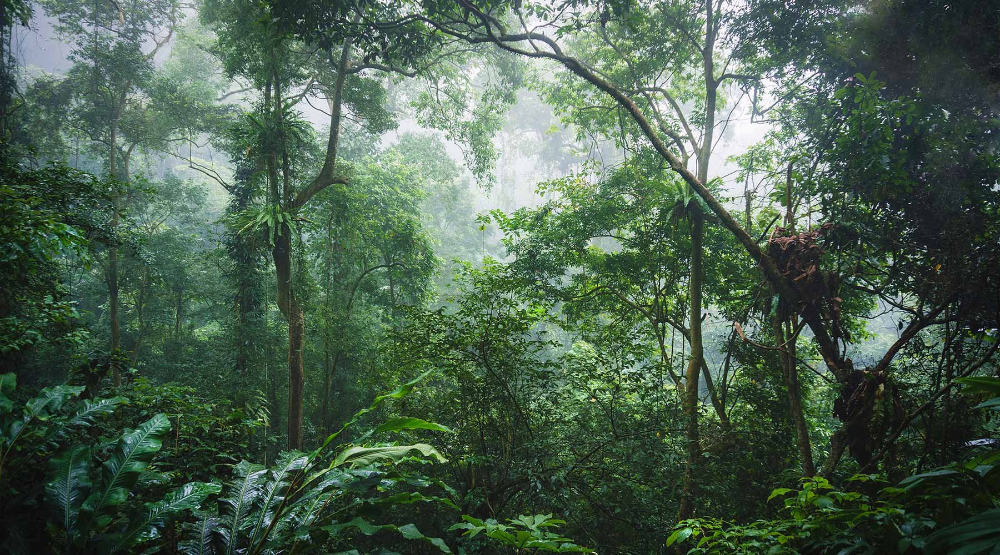
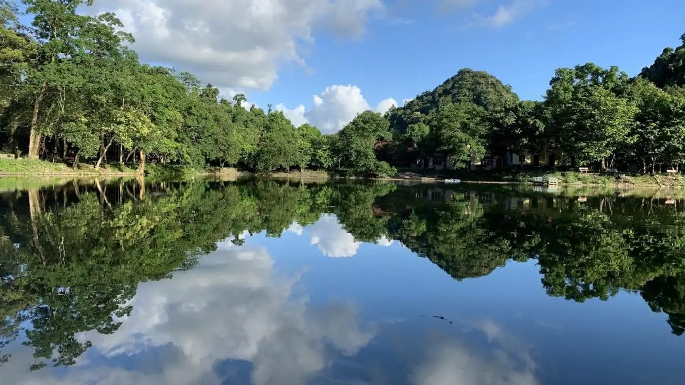